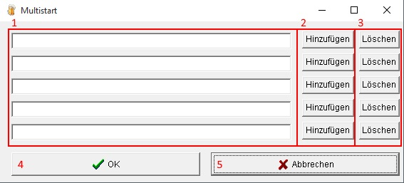

Hilfe Datei zu Brauerei V 1.60 – by Emilio – HOME
Multistart:
Durch einen Rechtsklick auf Start wird das Multistartfenster geöffnet. Hier können mehrere Rezepte geöffnet werden, die dann in Folge abgearbeitet werden.

Anzeige Rezeptname
Rezept hinzufügen
Rezept löschen
Brauprozess starten
Multistart abbrechen